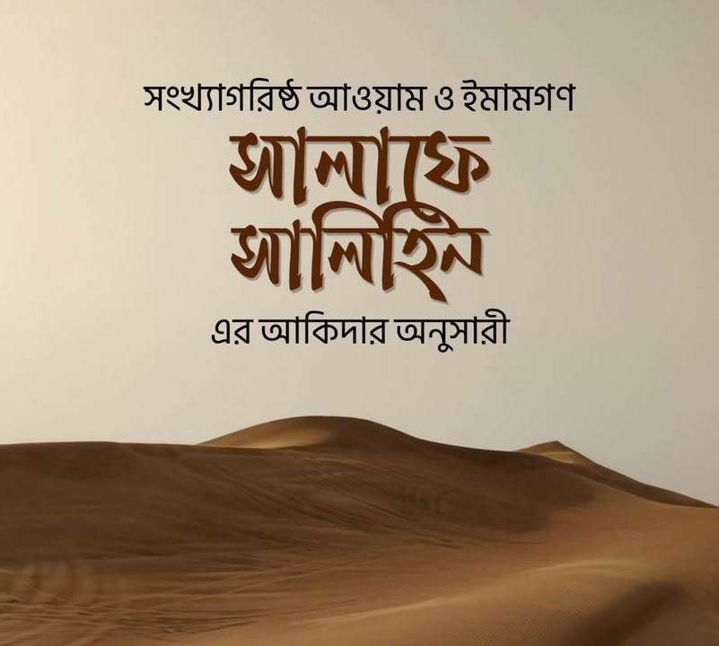

সমীক্ষা নয় যেন শুভঙ্করের ফাঁকি
২১ জুলাই, ২০২৩
সমীক্ষা নয় যেন শুভঙ্করের ফাঁকি—
কালামি ভাইয়েরা প্রায়ই দাবি করেন “উম্মতে মুসলিমার অধিকাংশ লোক আশআরি ও মাতুরিদি আকিদায় বিশ্বাসী। সুতরাং আশআরি-মাতুরিদি আকিদাহকে ভ্রান্ত বলা মানে অধিকাংশ আওয়াম ও আলেম-ইমামকে ভ্রান্ত আখ্যা দেয়া”(?) এ দাবি যে কতবড় ভাঁওতাবাজি, তা বুঝিয়ে বলছি।
প্রথমত, আওয়াম:
যারা আশআরি আকিদাহর “আ” কিংবা মাতুরিদি আকিদাহর ”ম”-ও জানে না। নিরেট সাধারণ মানুষ। যাদের মাথায় কালামিদের প্যাঁচানো ছাইপাঁশ কখনোই ঢুকবে না, ঢুকার কথাও না। তাহলে তারা আশআরি আর মাতুরিদি হয় কী করে? মজার বিষয় কি জানেন, অনেক আশআরি মনে করে আওয়াম বা সাধারণ মানুষের ঈমান নাকিস তথা অসম্পূর্ণ। কেননা তারা ইলমুল কালামের সূক্ষ্মাতিসূক্ষ্ম আদিল্লাহর মধ্য দিয়ে মহান আল্লাহর পরিচয় লাভে সক্ষম নয়। কালামিদের ঈমান পাক্কা; আর আওয়াম নজরে ওয়াজিব পরিহার করায় তাদের ঈমান ত্রুটিপূর্ণ। ইভেন তাদের মধ্যে এমনও ‘গুলাত’ আছে, যারা মনে করে মুকাল্লিদ আওয়ামের ঈমানই বাতিল তথা বিশুদ্ধ নয়। চিন্তা করেন, কী ভয়ঙ্কর কথা!
তবুও তারা বলছে আশআরি মুসলমান নাকি পৃথিবীতে অধিক। যা সুস্পষ্ট ভাঁওতাবাজি ছাড়া আর কি!
বস্তুত, সাধারণ মানুষের ঈমান সরল বিশ্বাসের ওপর ভিত্তি।
তাদের বিশ্বাস, মহান আল্লাহ একজন ওপরে আছেন।
তাদের আকিদাহ— امنت بالله كما هو باسمائه وصفاته—
যা সালাফে সালেহিনের আকিদাহ। আওয়াম না আশআরি আর না মাতুরিদি।
দ্বিতীয়ত, উলামা-আয়িম্মাহ:
যারা দ্বীনের জ্ঞান রাখেন। ইমাম বলতে কালামিরা হাতেগুণা কিছু মানুষের নাম বলে থাকেন। অথচ, শ্রেষ্ঠ ইমাম ও আলেমদের জামাআত হচ্ছে কুরুনে ছালাছাহ-প্রথম তিন শ্রেষ্ঠ যুগের ইমাম—সাহাবা, তাবেইন ও তবে তাবেইন। লক্ষ লক্ষ ইমাম ও মুজতাহিদের এ জামাআতের কেউ কি আশআরি আকিদাহ রাখতেন? না তখন আশআরি নামের কোনো অস্তিত্ব ছিল?!
চার মাজহাবের চার ইমাম— ইমাম আবু হানিফা রাহ. ইমাম মালেক রাহ. ইমাম শাফিই রাহ. ইমাম আহমদ রাহ.— যারা আশআরি মাজহাব প্রতিষ্ঠার বহু পূর্বের ইমাম। তারা কি আশআরি আকিদাহ রাখতেন? কখনোই নয়।
তাঁদের ছাত্রবৃন্দ— ইমাম আবু ইউসুফ, মোহাম্মদ, যুফার, আব্দুর রাহমান ইবনুল কাসিম, ইসহাক ইবনু ফুরাত, ওয়াকি ইবনুল জাররাহ রাহ. হুমাইদি, আবু উবাইদ কাসিম বিন সাল্লাম, ইসহাক বিন রাহুওয়াই, মুযানি রাহ. কোন আকিদাহর ছিলেন?
এছাড়াও সালাফের যুগের অন্যান্য ইমাম— রাবিআতুর রায়, আওযাঈ, ইব্রাহিম নাখাঈ, সুফিয়ান আস-সাওরি, সুফিয়ান ইবনু উইয়াইনা, লাইস বিন সা'দ ইবনু আবি রাবাহ, ইবনু শিহাব জুহরি, আব্দুল্লাহ ইবনুল মোবারাক, ইবনু সিরিন, আ'মাশ, হাসান আল-বসরি, ইয়াহিয়া বিন সাঈদ আল-কাত্তান, আব্দুর রাহমান ইবনু মাহদি রাহ.— রিজালের কিতাবে এমন হাজার হাজার ইমাম ও হাদিসের রাবিগন সবাই ছিলেন সালাফে সালেহিনের আকিদাহর অনুসারী, যাদের নাম বলে শেষ করার নয়।
এরপর আসেন, হাদিসের কিতাবের সংকলকগণ:
ইমাম বুখারি, ইমাম মুসলিম, আবু দাউদ, নাসাই, ইবনু মাজা, তিরমিজি, আব্দুর রাজ্জাক সানআনি, ইবনু খুযাইমাহ, আবু বকর বাজ্জার, আবু ইয়ালা, আবু আওয়ানাহ, জিয়াউদ্দিন আল-মাকদিসি এমনকি ইমাম আবু জাফর তাহাবি হানাফি রাহ-সহ এতো এতো নাম, যার ফিরিস্তি অতি দীর্ঘ।
পক্ষান্তরে আশআরি-মাতুরিদি আকিদাহ অনুসরণ যারা করতেন, তারা হাতেগুণা কিছু ইমাম। তবুও নাকি সংখ্যাগরিষ্ঠয় তারাই অধিক। হায় সেলুকাস! তাদের এ সমীকরণ যেন শুভঙ্করের ফাঁকির পারফেক্ট এক উদাহরণ।
